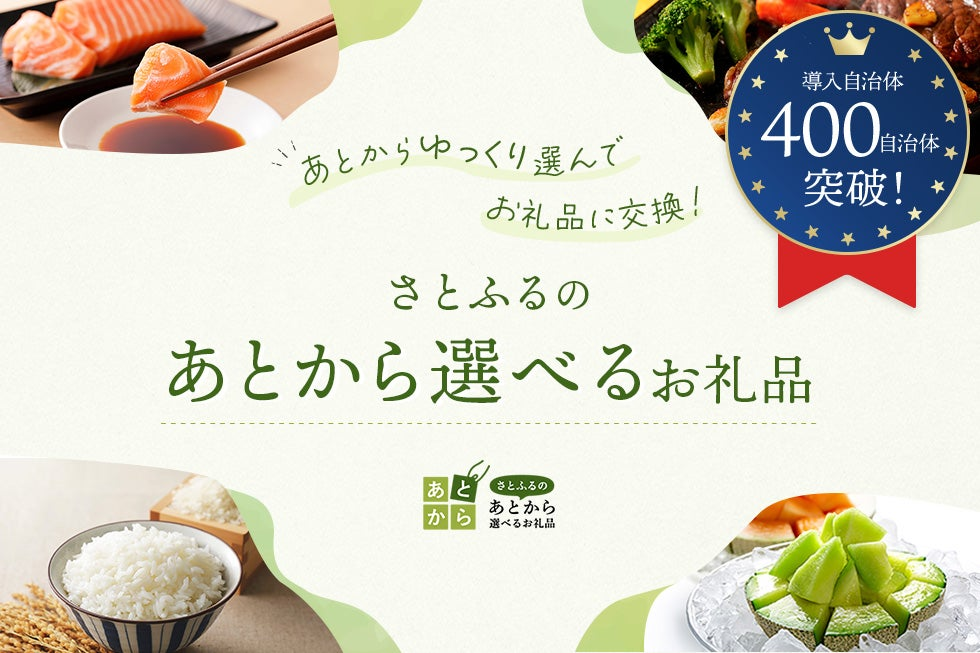

さとふるで年末に寄附する手順 — 決済方法で変わる寄附日と、残り枠の寄附の進め方
期限と手続き｜公開日：2026年11月16日｜最終更新日：2026年11月16日｜情報確認日：2026年11月16日
この記事は、ふるさと納税サイト「さとふる」で2026年分の寄附をする場合に絞った手順です。年末の寄附でつまずきやすいのは、次の2点です。
- 決済方法によって「寄附日」になる日が違う：申込日ではなく、決済完了日・入金日が寄附日になります。さとふるで選べる決済方法ごとに扱いが分かれます。
- お礼品を選ぶ時間がなくて、寄附自体を先送りしてしまう：さとふるには「あとから選べるお礼品」のサービスがあり、年内は寄附の決済までを済ませ、品目を選ぶのは後に回す段取りが取れます。
年末全体の確認項目はふるさと納税の年末チェックリストで整理しています。この記事は、そのうち「さとふるで実際に申し込む場面」の手順だけを扱います。この記事は一般的な情報提供を目的としたもので、個別の税務相談ではありません。
手順の全体像（4つの段取り）
| 順番 | やること | 期限の目安 |
|---|---|---|
| 1 | 残り枠を出す（上限額の目安 − 今年の寄附済み額） | 12月中 |
| 2 | さとふるで寄附先の自治体と金額を決める。ワンストップ特例を使う場合は、年間の寄附先が5団体以内に収まるかも数える | 寄附の前 |
| 3 | 決済方法を選んで申し込み、決済・入金を終える | 2026年12月31日（木）まで |
| 4 | 寄附金受領証明書を保管し、ワンストップ特例の申請書を自治体ごとに提出する | 2027年1月10日（日）必着 |
1. 残り枠の出し方
残り枠の目安は、上限額の目安から今年すでに寄附した金額を引いたものです。上限額の目安は早見表か目安シミュレーターで確認できます。モデルケースでの計算例は年末チェックリストに載せています。
- 上限額を超えた分は控除されません。年末時点で収入が確定していない場合は、上限額の目安を保守的に見て、残り枠に余裕を残すのが安全です。
- 自己負担の2,000円は、1回ごとの寄附ではなく、1年間（1月〜12月）の寄附金総額に対して必要となるものです。
- さとふる以外の経路で寄附した分も、今年の寄附済み額に含めて数えます。
2. さとふるの決済方法と、寄附日の扱い
さとふるで使える支払い方法は、クレジットカード、ソフトバンクまとめて支払い、Pay-easy、auかんたん決済、コンビニ決済、ドコモ払いの6種類です（さとふるの案内による）。どの方法でも、申込日ではなく決済・入金が終わった日が寄附日になります。
| さとふるの決済方法 | 寄附日（受領日）になる日 |
|---|---|
| クレジットカード | 決済完了日 |
| ソフトバンクまとめて支払い／auかんたん決済／ドコモ払い（キャリア決済） | 決済完了日 |
| コンビニ決済 | 入金日 |
| Pay-easy | 入金日 |
基準は決済方法や自治体の運用によって異なる場合があります。年末は申込みが集中し、処理に時間がかかることもあります。2026年分の寄附に確実にしたい場合は、その場で決済が完了する方法を選び、12月31日より前に余裕を持って済ませてください。さとふるの年末の案内（受付期限の扱いなど）は、公式サイトの最新の案内で確認してください。
3. お礼品は、寄附の後に選ぶ段取りも取れる
さとふるには「あとから選べるお礼品」のサービスがあります（出典：株式会社さとふる プレスリリース）。寄附の申込みと、お礼品を選ぶ作業を分けられるため、年末はまず寄附の決済を年内に終え、品目を選ぶのは落ち着いてからにする段取りが取れます。
年末に「選ぶ時間がないから寄附自体を来年に回す」と、2026年分の枠は使えなくなります。先に決済までを終える順序が、この時期の進め方です。サービスの対象や選択の期限などの詳細は、さとふるの公式案内で確認してください。
4. 寄附の後にやること
- 寄附金受領証明書の保管：寄附後に自治体から送付されます。確定申告で必要になるため保管してください。発行のタイミングは自治体ごとに異なります。
- ワンストップ特例の申請：申請書は寄附先の自治体ごとに提出し、2027年1月10日（日）必着です。オンライン申請が可能な自治体もあります。条件と期限の詳細はワンストップ特例の申請期限と、年末の寄附で気をつけることをご覧ください。
- 確定申告をする年は特例が使えない：医療費控除や住宅ローン控除の初年度などで確定申告をする場合、ワンストップ特例の申請は効力を失います。その場合は、確定申告の中で寄附金控除もあわせて申告します。
広告（A8.net経由）：寄附の申込先の1つとして、ふるさと納税サイト「さとふる」へのリンクを置きます。寄附先は各自治体の案内とあわせてご確認ください。

さとふる
- ふるさと納税の寄附をウェブで申し込めるポータルサイト
- 「あとから選べるお礼品」のサービスがある（出典：株式会社さとふる プレスリリース）
- クレジットカード等の決済では決済完了日が寄附日になるため、2026年分の寄附にするには12月31日までに決済を終える必要がある
出典
- 総務省 ふるさと納税ポータルサイト（よくある質問、ふるさと納税の流れ。2026年11月9日確認）
- 国税庁（タックスアンサー No.1150「一定の寄附をした場合には（寄附金控除）」ほか。2026年11月9日確認）
- さとふる公式サイト（支払い方法の案内。2026年11月16日確認）
- 株式会社さとふる プレスリリース（「あとから選べるお礼品」サービスについて）
- 当サイト「控除上限額の早見表」の計算モデル（総務省の早見表の代表値と照合済み）
更新ログ：2026年11月16日 初版公開。さとふる（A8.net）の広告リンクを設置。